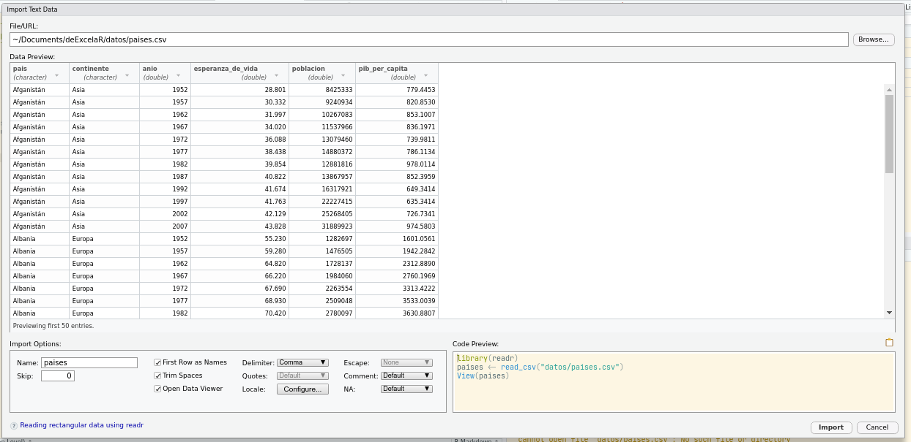

Leer datos tabulares
Existen muchas funciones distintas para leer datos dependiendo del formato en el que están guardados. Para datos tabulares, la forma más útil es el formato csv, que es un archivo de texto plano con datos separados por coma.
Obviamene para importar datos hace falta escrbir el códgo correspondiente pero para empezar, podés usar una ayuda de RStudio:
File → Import Dataset → From Text (readr)…
Esto nos va abrir una ventana donde podemos elegir el archivo que queremos importar (ya está elegido en la siguiente imagen) y otros detalles.
 En la pantalla principal van a tener una previsualización de los datos para guiarte. Abajo a la izquierda tenés varias opciones, como el nombre que vas a usar para la variable (paises), si la primera fila tiene la columna (sí), qué deliimtador tienen los datos (coma), etc…
Abajo a la derecha es lo importante, que es el código que vas a usar para efectivamente importar los datos. Vas a copiar ese código, cerrar esa ventana con el botón “Cancel”, y pegar el código en un chunk. Cuando lo ejecutes, vas tener una variable llamada “paises” con los datos.
library(readr)
paises <- read_csv("datos/paises.csv")
## Parsed with column specification:
## cols(
## pais = col_character(),
## continente = col_character(),
## anio = col_double(),
## esperanza_de_vida = col_double(),
## poblacion = col_double(),
## pib_per_capita = col_double()
## )
Nota: Notar que en este caso el código para leer los datos consta de dos líneas. La primera carga el paquete readr y el segundo usa la función read_csv() (del paquete readr) para leer el archivo .csv.
Todo ese texto naranja/rojo es intimidante pero no te preocupes, es sólo un mensaje que nos informa que los datos se leyeron y qué tipo de dato tiene cada columna. Podemos explorar la estructura de la variable paises usando la función str (de “structure”).
str(paises)
## tibble [1,704 × 6] (S3: spec_tbl_df/tbl_df/tbl/data.frame)
## $ pais : chr [1:1704] "Afganistán" "Afganistán" "Afganistán" "Afganistán" ...
## $ continente : chr [1:1704] "Asia" "Asia" "Asia" "Asia" ...
## $ anio : num [1:1704] 1952 1957 1962 1967 1972 ...
## $ esperanza_de_vida: num [1:1704] 28.8 30.3 32 34 36.1 ...
## $ poblacion : num [1:1704] 8425333 9240934 10267083 11537966 13079460 ...
## $ pib_per_capita : num [1:1704] 779 821 853 836 740 ...
## - attr(*, "spec")=
## .. cols(
## .. pais = col_character(),
## .. continente = col_character(),
## .. anio = col_double(),
## .. esperanza_de_vida = col_double(),
## .. poblacion = col_double(),
## .. pib_per_capita = col_double()
## .. )
Esto nos dice un montón. La primera línea dice que es una tibble, que es un caso especial de la estructura de datos tabular básica de R llamada data.frame. Tiene 1704 filas y 6 columnas. Las siguienes líneas nos dicen los nombres de las columnas (“pais”, “continente”, “anio”, “esperanza_de_vida”, “poblacion” y “pbi_per_capita”), su tipo de dato (chr o num), la longitud ([1:1704]) y sus primeros elementos. Cada columna de la tabla paises es un vector. Dado que los vectores son como los “ladrillos” que hacen a los data.frames, merecen una atención especial.
Vectores
Un vector en R es esencialmente una lista ordenada de cosas, con la condición especial de que todos los elementos en un vector tienen que ser del mismo tipo de datos básico.
R tiene 5 tipos de datos básicos: double (doble), integer (entero), complex (complejo), logical (lógico) y character (caracter). Existen otros pero son formas un poco más sofisticadas de estos tipos básicos. Por ejemplo, el formato POSIXct (de tiempo) se guarda como doble, representando la cantidad de segundos pasados desde el 01/01/1970.
Una forma conveniente de crear un vector es con la función c() (de combinar)
x <- c(1, 2, 3, 4)
x
## [1] 1 2 3 4
x es una serie con 4 elementos. Si usamos la función str():
str(x)
## num [1:4] 1 2 3 4
Esta salida nos está informando que x es de tipo numérico (un nombre para dobles y enteros). Los vectores sólo pueden ser de un tipo. Por lo tanto, si intentás combinar un caracter con números, R va a tratar de “coercer” todo a un tipo común:
x <- c("uno", 2)
str(x)
## chr [1:2] "uno" "2"
El vector x es de tipo caracter y el número 2 se convirtió en el caracter “2”. Este tipo de conversión automática puede ser fuente de muchos dolores de cabeza! Por ejemplo, ¿qué creés que va a pasar si tratás de sumarle 1 a la variable x?
x + 1
## Error in x + 1: non-numeric argument to binary operator
¡Un error! ¿Cuál es el problema? El mensaje de error nos da una pista usamos un “argumento no numérico”. R puede hacer 2 + 1, pero "2" + 1 no significa nada!
Las reglas de coerción son: logical -> integer -> numeric -> complex -> character, donde -> se puede leer como se transforma en. Para forzar la coerción en contra de esta cadena podés usar las funciones as....
as.numeric(x)
## Warning: NAs introduced by coercion
## [1] NA 2
¡Pero no siempre funciona! Recordá que x tiene los valores “uno” y “2”. R pudo convertir “2” en 2, pero no sabe cómo transformar “uno” en un numérico. Lo que devuelve es un vector que en el lugar de “2” tiene 2, pero en el lugar de “uno” tiene NA, que es un tipo de elemento especial que representa un valor faltante. Pero R avisa, así que no es traidor: el warning nos advierte que la coerción introdujo valores faltantes.
Vectorización
La mayoría de las funciones de R pueden trabajar sobre vectores y lo hacen elemento a elemento. Esto significa que
x <- 1:4 # 1:4 crea un vector que empieza en 1 y terminaen 4,
y <- 6:9
x + y
## [1] 7 9 11 13
x: 1 2 3 4
+ + + +
y: 6 7 8 9
---------------
7 9 11 13
Data.frames
The somewhat cryptic output from this command indicates the basic data type found in this vector - in this case chr, character; an indication of the number of things in the vector - actually, the indexes of the vector, in this case [1:3]; and a few examples of what’s actually in the vector - in this case empty character strings. If we similarly do
También puedes crear vectores con contenido explícito con la función combine o c():
Si no eliges un tipo de datos, por defecto R elige el tipo de datos logical. También puedes declarar un vector vacío de cualquier tipo que quieras.
Una indicación del número de elementos en el vector - específicamente los índices del vector, en este caso [1:3] y unos pocos ejemplos de los elementos del vector - en este caso strings vacíos.
Podemos ver que gatos$peso es un vector usando la funcion str.
x <- c(1, 2, 3, 4)
Cada columna tiene un nombre y un tipo de datos. En este caso, el mensaje que apareció cuando leíste el dato te informa que la variable paises tiene 6 columnas: “pais”, “continente”, “anio”, “esperanza_de_vida”, “poblacion” y “pbi_per_capita”. Las dos primeras son caracteres (es decir, tienen texto) y las siguientes son “dobles” que básicamente significa que son números. En una tabla, cada columna tiene un único tipo de datos. Esto significa que en la columna pais no se puede tener datos numéricos mezclados con los datos de texto.
En paralelo a los tipos de datos están las estructuras de datos. En este momento, paises es una estructur ade datos de R llamada data.frame (en particular, un tipo de data.frame usado por readr llamado tibble) que se usa para guardar tablas. Cada columna de la tabla paises es un vector. Dado que los vectores son como los “ladrillos” que hacen a los data.frames, merecen una atención especial.
Para tener una idea de los datos, podemos usar la función head(), que, por defecto, muestra las primeras 6 observaciones de una tabla.
head(paises)
## # A tibble: 6 x 6
## pais continente anio esperanza_de_vida poblacion pib_per_capita
## <chr> <chr> <dbl> <dbl> <dbl> <dbl>
## 1 Afganistán Asia 1952 28.8 8425333 779.
## 2 Afganistán Asia 1957 30.3 9240934 821.
## 3 Afganistán Asia 1962 32.0 10267083 853.
## 4 Afganistán Asia 1967 34.0 11537966 836.
## 5 Afganistán Asia 1972 36.1 13079460 740.
## 6 Afganistán Asia 1977 38.4 14880372 786.
Esto
LS0tCnRpdGxlOiAiTGVjdHVyYSBkZSBkYXRvcyBvcmRlbmFkb3MiCm91dHB1dDogCiAgaHRtbF9kb2N1bWVudDoKICAgIGNvZGVfZG93bmxvYWQ6IHRydWUKICAgIHRvYzogdHJ1ZQogICAgdG9jX2Zsb2F0OiB0cnVlCi0tLQoKCiMjIExlZXIgZGF0b3MgdGFidWxhcmVzCgpFeGlzdGVuIG11Y2hhcyBmdW5jaW9uZXMgZGlzdGludGFzIHBhcmEgbGVlciBkYXRvcyBkZXBlbmRpZW5kbyBkZWwgZm9ybWF0byBlbiBlbCBxdWUgZXN0w6FuIGd1YXJkYWRvcy4gUGFyYSBkYXRvcyB0YWJ1bGFyZXMsIGxhIGZvcm1hIG3DoXMgw7p0aWwgZXMgZWwgZm9ybWF0byBjc3YsIHF1ZSBlcyB1biBhcmNoaXZvIGRlIHRleHRvIHBsYW5vIGNvbiBkYXRvcyBzZXBhcmFkb3MgcG9yIGNvbWEuIAoKT2J2aWFtZW5lIHBhcmEgaW1wb3J0YXIgZGF0b3MgaGFjZSBmYWx0YSBlc2NyYmlyIGVsIGPDs2RnbyBjb3JyZXNwb25kaWVudGUgcGVybyBwYXJhIGVtcGV6YXIsIHBvZMOpcyB1c2FyIHVuYSBheXVkYSBkZSBSU3R1ZGlvOgoKOjo6IHsuYWxlcnQgLmFsZXJ0LXNlY29uZGFyeX0KRmlsZSDihpIgSW1wb3J0IERhdGFzZXQg4oaSIEZyb20gVGV4dCAocmVhZHIpLi4uCjo6OgoKRXN0byBub3MgdmEgYWJyaXIgdW5hIHZlbnRhbmEgZG9uZGUgcG9kZW1vcyBlbGVnaXIgZWwgYXJjaGl2byBxdWUgcXVlcmVtb3MgaW1wb3J0YXIgKHlhIGVzdMOhIGVsZWdpZG8gZW4gbGEgc2lndWllbnRlIGltYWdlbikgeSBvdHJvcyBkZXRhbGxlcy4KCiFbRGnDoWxvZ28gZGUgaW1wb3J0YXIgZGF0b3NdKGltZy9pbXBvcnRhci1wYWlzZXMucG5nKQpFbiBsYSBwYW50YWxsYSBwcmluY2lwYWwgdmFuIGEgdGVuZXIgdW5hIHByZXZpc3VhbGl6YWNpw7NuIGRlIGxvcyBkYXRvcyBwYXJhIGd1aWFydGUuIEFiYWpvIGEgbGEgaXpxdWllcmRhIHRlbsOpcyB2YXJpYXMgb3BjaW9uZXMsIGNvbW8gZWwgbm9tYnJlIHF1ZSB2YXMgYSB1c2FyIHBhcmEgbGEgdmFyaWFibGUgKGBwYWlzZXNgKSwgc2kgbGEgcHJpbWVyYSBmaWxhIHRpZW5lIGxhIGNvbHVtbmEgKHPDrSksIHF1w6kgZGVsaWltdGFkb3IgdGllbmVuIGxvcyBkYXRvcyAoY29tYSksIGV0Yy4uLiAKCkFiYWpvIGEgbGEgZGVyZWNoYSBlcyBsbyBpbXBvcnRhbnRlLCBxdWUgZXMgZWwgY8OzZGlnbyBxdWUgdmFzIGEgdXNhciBwYXJhIGVmZWN0aXZhbWVudGUgaW1wb3J0YXIgbG9zIGRhdG9zLiBWYXMgYSBjb3BpYXIgZXNlIGPDs2RpZ28sIGNlcnJhciBlc2EgdmVudGFuYSBjb24gZWwgYm90w7NuICJDYW5jZWwiLCB5IHBlZ2FyIGVsIGPDs2RpZ28gZW4gdW4gY2h1bmsuIEN1YW5kbyBsbyBlamVjdXRlcywgdmFzIHRlbmVyIHVuYSB2YXJpYWJsZSBsbGFtYWRhICJwYWlzZXMiIGNvbiBsb3MgZGF0b3MuICAKCgpgYGB7cn0KbGlicmFyeShyZWFkcikKcGFpc2VzIDwtIHJlYWRfY3N2KCJkYXRvcy9wYWlzZXMuY3N2IikKYGBgCjo6OiB7LmFsZXJ0IC5hbGVydC1zdWNjZXNzfQoqKk5vdGEqKjogTm90YXIgcXVlIGVuIGVzdGUgY2FzbyBlbCBjw7NkaWdvIHBhcmEgbGVlciBsb3MgZGF0b3MgY29uc3RhIGRlIGRvcyBsw61uZWFzLiBMYSBwcmltZXJhIGNhcmdhIGVsIHBhcXVldGUgcmVhZHIgeSBlbCBzZWd1bmRvIHVzYSBsYSBmdW5jacOzbiBgcmVhZF9jc3YoKWAgKGRlbCBwYXF1ZXRlIHJlYWRyKSBwYXJhIGxlZXIgZWwgYXJjaGl2byAuY3N2Lgo6OjoKClRvZG8gZXNlIHRleHRvIG5hcmFuamEvcm9qbyBlcyBpbnRpbWlkYW50ZSBwZXJvIG5vIHRlIHByZW9jdXBlcywgZXMgc8OzbG8gdW4gbWVuc2FqZSBxdWUgbm9zIGluZm9ybWEgcXVlIGxvcyBkYXRvcyBzZSBsZXllcm9uIHkgcXXDqSB0aXBvIGRlIGRhdG8gdGllbmUgY2FkYSBjb2x1bW5hLiBQb2RlbW9zIGV4cGxvcmFyIGxhIGVzdHJ1Y3R1cmEgZGUgbGEgdmFyaWFibGUgYHBhaXNlc2AgdXNhbmRvIGxhIGZ1bmNpw7NuIGBzdHJgIChkZSAic3RydWN0dXJlIikuIAoKYGBge3J9CnN0cihwYWlzZXMpCmBgYApFc3RvIG5vcyBkaWNlIHVuIG1vbnTDs24uIExhIHByaW1lcmEgbMOtbmVhIGRpY2UgcXVlIGVzIHVuYSBgdGliYmxlYCwgcXVlIGVzIHVuIGNhc28gZXNwZWNpYWwgZGUgbGEgZXN0cnVjdHVyYSBkZSBkYXRvcyB0YWJ1bGFyIGLDoXNpY2EgZGUgUiBsbGFtYWRhIGRhdGEuZnJhbWUuIFRpZW5lIDE3MDQgZmlsYXMgeSA2IGNvbHVtbmFzLiBMYXMgc2lndWllbmVzIGzDrW5lYXMgbm9zIGRpY2VuIGxvcyBub21icmVzIGRlIGxhcyBjb2x1bW5hcyAoInBhaXMiLCAiY29udGluZW50ZSIsICJhbmlvIiwgImVzcGVyYW56YV9kZV92aWRhIiwgInBvYmxhY2lvbiIgeSAicGJpX3Blcl9jYXBpdGEiKSwgc3UgdGlwbyBkZSBkYXRvIChgY2hyYCBvIGBudW1gKSwgbGEgbG9uZ2l0dWQgKGBbMToxNzA0XWApIHkgc3VzIHByaW1lcm9zIGVsZW1lbnRvcy4gQ2FkYSBjb2x1bW5hIGRlIGxhIHRhYmxhIGBwYWlzZXNgIGVzIHVuICoqdmVjdG9yKiouIERhZG8gcXVlIGxvcyB2ZWN0b3JlcyBzb24gY29tbyBsb3MgImxhZHJpbGxvcyIgcXVlIGhhY2VuIGEgbG9zIGRhdGEuZnJhbWVzLCBtZXJlY2VuIHVuYSBhdGVuY2nDs24gZXNwZWNpYWwuCgoKIyMgVmVjdG9yZXMKClVuIHZlY3RvciBlbiBSIGVzIGVzZW5jaWFsbWVudGUgdW5hIGxpc3RhIG9yZGVuYWRhIGRlIGNvc2FzLCBjb24gbGEgY29uZGljacOzbiBlc3BlY2lhbCBkZSBxdWUgdG9kb3MgbG9zIGVsZW1lbnRvcyBlbiB1biB2ZWN0b3IgdGllbmVuIHF1ZSBzZXIgZGVsIG1pc21vIHRpcG8gZGUgZGF0b3MgYsOhc2ljby4KClIgdGllbmUgNSB0aXBvcyBkZSBkYXRvcyBiw6FzaWNvczogZG91YmxlIChkb2JsZSksIGludGVnZXIgKGVudGVybyksIGNvbXBsZXggKGNvbXBsZWpvKSwgbG9naWNhbCAobMOzZ2ljbykgeSAgY2hhcmFjdGVyIChjYXJhY3RlcikuIEV4aXN0ZW4gb3Ryb3MgcGVybyBzb24gZm9ybWFzIHVuIHBvY28gbcOhcyBzb2Zpc3RpY2FkYXMgZGUgZXN0b3MgdGlwb3MgYsOhc2ljb3MuIFBvciBlamVtcGxvLCBlbCBmb3JtYXRvIFBPU0lYY3QgKGRlIHRpZW1wbykgc2UgZ3VhcmRhIGNvbW8gZG9ibGUsIHJlcHJlc2VudGFuZG8gbGEgY2FudGlkYWQgZGUgc2VndW5kb3MgcGFzYWRvcyBkZXNkZSBlbCAwMS8wMS8xOTcwLiAKClVuYSBmb3JtYSBjb252ZW5pZW50ZSBkZSBjcmVhciB1biB2ZWN0b3IgZXMgY29uIGxhIGZ1bmNpw7NuIGBjKClgIChkZSBjb21iaW5hcikKCmBgYHtyfQp4IDwtIGMoMSwgMiwgMywgNCkKeApgYGAKYHhgIGVzIHVuYSBzZXJpZSBjb24gNCBlbGVtZW50b3MuIFNpIHVzYW1vcyBsYSBmdW5jacOzbiBgc3RyKClgOgoKYGBge3J9CnN0cih4KQpgYGAKRXN0YSBzYWxpZGEgbm9zIGVzdMOhIGluZm9ybWFuZG8gcXVlIGB4YCBlcyBkZSB0aXBvIG51bcOpcmljbyAodW4gbm9tYnJlIHBhcmEgZG9ibGVzIHkgZW50ZXJvcykuIExvcyB2ZWN0b3JlcyBzw7NsbyBwdWVkZW4gc2VyIGRlIHVuIHRpcG8uIFBvciBsbyB0YW50bywgc2kgaW50ZW50w6FzIGNvbWJpbmFyIHVuIGNhcmFjdGVyIGNvbiBuw7ptZXJvcywgUiB2YSBhIHRyYXRhciBkZSAiY29lcmNlciIgdG9kbyBhIHVuIHRpcG8gY29tw7puOgoKYGBge3J9CnggPC0gYygidW5vIiwgMikKc3RyKHgpCmBgYApFbCB2ZWN0b3IgYHhgIGVzIGRlIHRpcG8gY2FyYWN0ZXIgeSBlbCBuw7ptZXJvIDIgc2UgY29udmlydGnDsyBlbiBlbCBjYXJhY3RlciAiMiIuIEVzdGUgdGlwbyBkZSBjb252ZXJzacOzbiBhdXRvbcOhdGljYSBwdWVkZSBzZXIgZnVlbnRlIGRlIG11Y2hvcyBkb2xvcmVzIGRlIGNhYmV6YSEgUG9yIGVqZW1wbG8sIMK/cXXDqSBjcmXDqXMgcXVlIHZhIGEgcGFzYXIgc2kgdHJhdMOhcyBkZSBzdW1hcmxlIDEgYSBsYSB2YXJpYWJsZSB4PwoKYGBge3IsIGVycm9yID0gVFJVRX0KeCArIDEKYGBgCsKhVW4gZXJyb3IhIMK/Q3XDoWwgZXMgZWwgcHJvYmxlbWE/IEVsIG1lbnNhamUgZGUgZXJyb3Igbm9zIGRhIHVuYSBwaXN0YSB1c2Ftb3MgdW4gImFyZ3VtZW50byBubyBudW3DqXJpY28iLiBSIHB1ZWRlIGhhY2VyIGAyICsgMWAsIHBlcm8gYCIyIiArIDFgIG5vIHNpZ25pZmljYSBuYWRhISAKCkxhcyByZWdsYXMgZGUgY29lcmNpw7NuIHNvbjogbG9naWNhbCAtPiBpbnRlZ2VyIC0+IG51bWVyaWMgLT4gY29tcGxleCAtPiBjaGFyYWN0ZXIsIGRvbmRlIC0+IHNlIHB1ZWRlIGxlZXIgY29tbyBzZSB0cmFuc2Zvcm1hIGVuLiBQYXJhIGZvcnphciBsYSBjb2VyY2nDs24gZW4gY29udHJhIGRlIGVzdGEgY2FkZW5hIHBvZMOpcyB1c2FyIGxhcyBmdW5jaW9uZXMgYGFzLi4uYC4gCgpgYGB7cn0KYXMubnVtZXJpYyh4KQpgYGAKwqFQZXJvIG5vIHNpZW1wcmUgZnVuY2lvbmEhIFJlY29yZMOhIHF1ZSBgeGAgdGllbmUgbG9zIHZhbG9yZXMgInVubyIgeSAiMiIuIFIgcHVkbyBjb252ZXJ0aXIgIjIiIGVuIDIsIHBlcm8gbm8gc2FiZSBjw7NtbyB0cmFuc2Zvcm1hciAidW5vIiBlbiB1biBudW3DqXJpY28uIExvIHF1ZSBkZXZ1ZWx2ZSBlcyB1biB2ZWN0b3IgcXVlIGVuIGVsIGx1Z2FyIGRlICIyIiB0aWVuZSAyLCBwZXJvIGVuIGVsIGx1Z2FyIGRlICJ1bm8iIHRpZW5lIGBOQWAsIHF1ZSBlcyB1biB0aXBvIGRlIGVsZW1lbnRvIGVzcGVjaWFsIHF1ZSByZXByZXNlbnRhIHVuIHZhbG9yIGZhbHRhbnRlLiBQZXJvIFIgYXZpc2EsIGFzw60gcXVlIG5vIGVzIHRyYWlkb3I6IGVsIHdhcm5pbmcgbm9zIGFkdmllcnRlIHF1ZSBsYSBjb2VyY2nDs24gaW50cm9kdWpvIHZhbG9yZXMgZmFsdGFudGVzLgoKCiMjIyBWZWN0b3JpemFjacOzbgoKTGEgbWF5b3LDrWEgZGUgbGFzIGZ1bmNpb25lcyBkZSBSIHB1ZWRlbiB0cmFiYWphciBzb2JyZSB2ZWN0b3JlcyB5IGxvIGhhY2VuICoqZWxlbWVudG8gYSBlbGVtZW50byoqLiBFc3RvIHNpZ25pZmljYSBxdWUgCgpgYGB7cn0KeCA8LSAxOjQgICAjIDE6NCBjcmVhIHVuIHZlY3RvciBxdWUgZW1waWV6YSBlbiAxIHkgdGVybWluYWVuIDQsCnkgPC0gNjo5CnggKyB5CmBgYAoKYGBgCng6ICAxICAyICAzICA0CiAgICArICArICArICArCnk6ICA2ICA3ICA4ICA5Ci0tLS0tLS0tLS0tLS0tLQogICAgNyAgOSAxMSAxMwpgYGAKCgojIyBEYXRhLmZyYW1lcwoKCgoKVGhlIHNvbWV3aGF0IGNyeXB0aWMgb3V0cHV0IGZyb20gdGhpcyBjb21tYW5kIGluZGljYXRlcyB0aGUgYmFzaWMgZGF0YSB0eXBlIGZvdW5kIGluIHRoaXMgdmVjdG9yIC0gaW4gdGhpcyBjYXNlIGNociwgY2hhcmFjdGVyOyBhbiBpbmRpY2F0aW9uIG9mIHRoZSBudW1iZXIgb2YgdGhpbmdzIGluIHRoZSB2ZWN0b3IgLSBhY3R1YWxseSwgdGhlIGluZGV4ZXMgb2YgdGhlIHZlY3RvciwgaW4gdGhpcyBjYXNlIFsxOjNdOyBhbmQgYSBmZXcgZXhhbXBsZXMgb2Ygd2hhdOKAmXMgYWN0dWFsbHkgaW4gdGhlIHZlY3RvciAtIGluIHRoaXMgY2FzZSBlbXB0eSBjaGFyYWN0ZXIgc3RyaW5ncy4gSWYgd2Ugc2ltaWxhcmx5IGRvCgpUYW1iacOpbiBwdWVkZXMgY3JlYXIgdmVjdG9yZXMgY29uIGNvbnRlbmlkbyBleHBsw61jaXRvIGNvbiBsYSBmdW5jacOzbiBjb21iaW5lIG8gYygpOgoKU2kgbm8gZWxpZ2VzIHVuIHRpcG8gZGUgZGF0b3MsIHBvciBkZWZlY3RvIFIgZWxpZ2UgZWwgdGlwbyBkZSBkYXRvcyBsb2dpY2FsLiBUYW1iacOpbiBwdWVkZXMgZGVjbGFyYXIgdW4gdmVjdG9yIHZhY8OtbyBkZSBjdWFscXVpZXIgdGlwbyBxdWUgcXVpZXJhcy4KClVuYSBpbmRpY2FjacOzbiBkZWwgbsO6bWVybyBkZSBlbGVtZW50b3MgZW4gZWwgdmVjdG9yIC0gZXNwZWPDrWZpY2FtZW50ZSBsb3Mgw61uZGljZXMgZGVsIHZlY3RvciwgZW4gZXN0ZSBjYXNvIFsxOjNdIHkgdW5vcyBwb2NvcyBlamVtcGxvcyBkZSBsb3MgZWxlbWVudG9zIGRlbCB2ZWN0b3IgLSBlbiBlc3RlIGNhc28gc3RyaW5ncyB2YWPDrW9zLgoKUG9kZW1vcyB2ZXIgcXVlIGdhdG9zJHBlc28gZXMgdW4gdmVjdG9yIHVzYW5kbyBsYSBmdW5jaW9uIHN0ci4KCmBgYHtyfQp4IDwtIGMoMSwgMiwgMywgNCkKYGBgCgoKCkNhZGEgY29sdW1uYSB0aWVuZSB1biBub21icmUgeSB1biB0aXBvIGRlIGRhdG9zLiBFbiBlc3RlIGNhc28sIGVsIG1lbnNhamUgcXVlIGFwYXJlY2nDsyBjdWFuZG8gbGXDrXN0ZSBlbCBkYXRvIHRlIGluZm9ybWEgcXVlIGxhIHZhcmlhYmxlIGBwYWlzZXNgIHRpZW5lIDYgY29sdW1uYXM6ICJwYWlzIiwgImNvbnRpbmVudGUiLCAiYW5pbyIsICJlc3BlcmFuemFfZGVfdmlkYSIsICJwb2JsYWNpb24iIHkgInBiaV9wZXJfY2FwaXRhIi4gTGFzIGRvcyBwcmltZXJhcyBzb24gY2FyYWN0ZXJlcyAoZXMgZGVjaXIsIHRpZW5lbiB0ZXh0bykgeSBsYXMgc2lndWllbnRlcyBzb24gImRvYmxlcyIgcXVlIGLDoXNpY2FtZW50ZSBzaWduaWZpY2EgcXVlIHNvbiBuw7ptZXJvcy4gRW4gdW5hIHRhYmxhLCBjYWRhIGNvbHVtbmEgdGllbmUgdW4gw7puaWNvIHRpcG8gZGUgZGF0b3MuIEVzdG8gc2lnbmlmaWNhIHF1ZSBlbiBsYSBjb2x1bW5hIHBhaXMgbm8gc2UgcHVlZGUgdGVuZXIgZGF0b3MgbnVtw6lyaWNvcyBtZXpjbGFkb3MgY29uIGxvcyBkYXRvcyBkZSB0ZXh0by4gCgoKCgpFbiBwYXJhbGVsbyBhIGxvcyB0aXBvcyBkZSBkYXRvcyBlc3TDoW4gbGFzIGVzdHJ1Y3R1cmFzIGRlIGRhdG9zLiBFbiBlc3RlIG1vbWVudG8sIGBwYWlzZXNgIGVzIHVuYSBlc3RydWN0dXIgYWRlIGRhdG9zIGRlIFIgbGxhbWFkYSAqKmRhdGEuZnJhbWUqKiAoZW4gcGFydGljdWxhciwgdW4gdGlwbyBkZSBkYXRhLmZyYW1lIHVzYWRvIHBvciByZWFkciBsbGFtYWRvIHRpYmJsZSkgcXVlIHNlIHVzYSBwYXJhIGd1YXJkYXIgdGFibGFzLiBDYWRhIGNvbHVtbmEgZGUgbGEgdGFibGEgYHBhaXNlc2AgZXMgdW4gKip2ZWN0b3IqKi4gRGFkbyBxdWUgbG9zIHZlY3RvcmVzIHNvbiBjb21vIGxvcyAibGFkcmlsbG9zIiBxdWUgaGFjZW4gYSBsb3MgZGF0YS5mcmFtZXMsIG1lcmVjZW4gdW5hIGF0ZW5jacOzbiBlc3BlY2lhbC4KCgpQYXJhIHRlbmVyIHVuYSBpZGVhIGRlIGxvcyBkYXRvcywgcG9kZW1vcyB1c2FyIGxhIGZ1bmNpw7NuIGBoZWFkKClgLCBxdWUsIHBvciBkZWZlY3RvLCBtdWVzdHJhIGxhcyBwcmltZXJhcyA2IG9ic2VydmFjaW9uZXMgZGUgdW5hIHRhYmxhLiAKCmBgYHtyfQpoZWFkKHBhaXNlcykKYGBgCgpFc3Rv